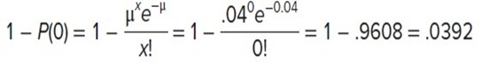

1. Hasil pada setiap percobaan eksperimen diklasifikasikan ke dalam satu atau dua kategori yang saling eksklusif-berhasil atau gagal
2. Variabel acak adalah jumlah keberhasilan dalam sejumlah percobaan tetap.
3. Pengadilan tidak independen.
4. Kami berasumsi bahwa kami mengambil sampel dari populasi terbatas tanpa penggantian dan. jadi, kemungkinan keberhasilan berubah untuk setiap percobaan.
1. Jika sampel dipilih dari populasi terbatas tanpa penggantian
2. Jika ukuran sampel 𝑛 lebih dari 5% dari jumlah populasi tanpa penggantian 𝑁
Kemudian, distribusi hipergeometrik digunakan untuk menentukan probabilitas sejumlah keberhasilan atau kegagalan tertentu. Ini sangat cocok jika ukuran populasinya kecil.
Dimana,
𝑁 adalah jumlah penduduk
𝑆 adalah jumlah keberhasilan dalam populasi
𝑥 adalah jumlah keberhasilan dalam sampel
𝑛 adalah ukuran sampel atau jumlah uji coba
𝐶 adalah simbol kombinasi
Contoh :
Playtime Toys Inc. Mempekerjakan 50 orang di Departemen Perakitan. 40 karyawan tergabung dalam serikat pekerja dan 10 lainnya tidak. Lima karyawan dipilih secara acak untuk membentuk komite untuk bertemu dengan manajemen mengenai waktu mulai shift. Berapa probabilitas bahwa 4 dari 5 yang dipilih untuk komite menjadi anggota serikat?
Solusi :
Populasi adalah 50. seorang karyawan hanya dapat dipilih satu kali untuk komite. Oleh karena itu, pengambilan sampel dilakukan tanpa penggantian.
𝑁 adalah 50, jumlah karyawan.
𝑆 adalah 40, jumlah karyawan serikat pekerja.
𝑥 adalah 4, jumlah karyawan serikat pekerja yang dipilih.
𝑛 adalah 5, jumlah karyawan yang dipilih.
Dengan demikian, probabilitas untuk memilih 5 assmbly worker secara acak dari 50 pekerja dan menemukan 4 dari 5 adalah anggota serikat adalah 0,431.
Menjelaskan berapa kali beberapa peristiwa terjadi selama interval tertentu peristiwa per unit: Waktu, jarak, luas, atau volume.
DISTRIBUSI PROBABILITAS POISSON
1. Variabel acak adalah berapa kali beberapa peristiwa terjadi selama interval yang ditentukan.
2. Probabilitas acara sebanding dengan ukuran intervalnya.
3. Interval tidak tumpang tindih dan independen.
Contoh :
Maskapai hemat adalah maskapai penerbangan musiman yang mengoperasikan penerbangan dari Pantai Myrtle, Carolina Selatan ke berbagai kota di paling utara. Tujuannya termasuk bandara Boston, Pittsburgh, Buffalo, dan bandara LaGuardia dan JFK di New York City. Anggaran baru-baru ini mengkhawatirkan tentang jumlah tas yang hilang. Ann proston dari Departemen Analisis diminta untuk mempelajari masalah tersebut. Dia secara acak memilih sampel dari 500 penerbangan dan menemukan bahwa total 20 tas hilang pada penerbangan sampel.
Berapa rata-rata jumlah bagasi yang hilang per penerbangan? Bagaimana kemungkinan tidak ada tas yang hilang dalam penerbangan? Berapa probabilitas setidaknya satu tas hilang?
Solusi:
Berdasarkan informasi sampel, kami dapat memperkirakan jumlah rata-rata bagasi yang hilang per penerbangan. Ada 20 bagasi hilang dalam 500 penerbangan sehingga jumlah rata-rata bagasi yang hilang per penerbangan adalah 0,04 ditemukan pada 20/500.
Probabilitas jumlah tas yang hilang adalah 0 adalah :
Kemungkinan 1 atau lebih tas hilang adalah :
